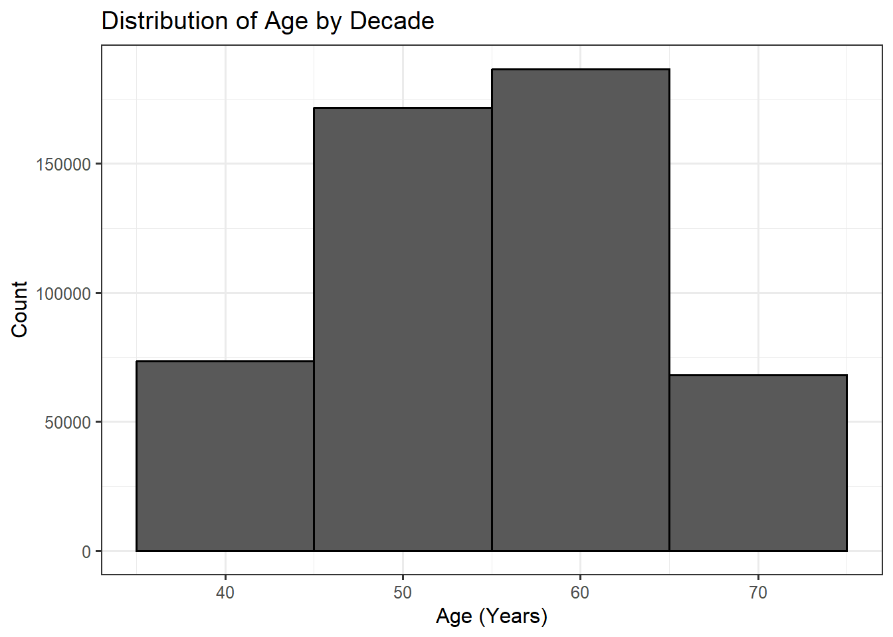
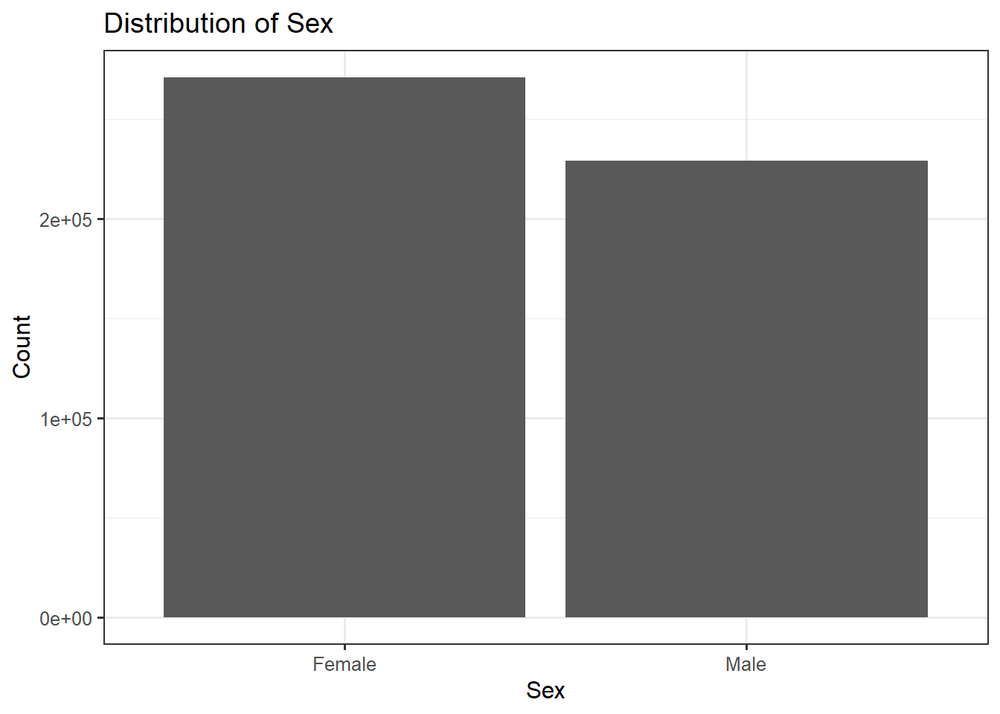
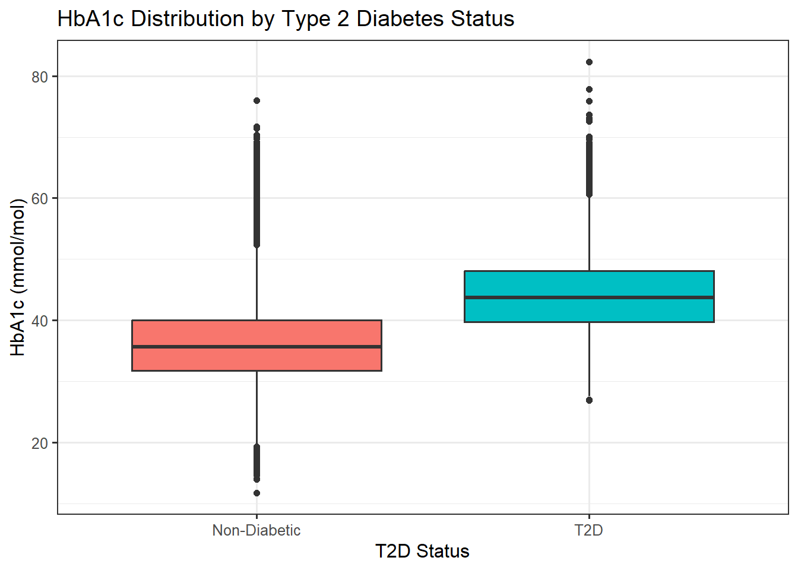

#install.packages("tidyverse")
library(tidyverse)HPDM208Z Stratified Medicine Workshop 1: Introduction to Epidemiology in R
MSc Health Data Science, University of Exeter
1 Introduction
This workshop introduces fundamental concepts in epidemiology and statistical analysis using R, focused on health data science. We’ll use a synthetic version UK Biobank baseline data, including a few key phenotypes.
UK Biobank (www.ukbiobank.ac.uk) is a large 500,000-person cohort that has transformed health data science in recent years. It’s scale and depth—including both genetics, health records, and deep phenotyping—having provided many insights into mechanisms and predictors of health outcomes.
In this workshop you will learn how to load a text file into R—a commonly used, open source, highly versatile data science program—and perform introductory epidemiological analyses. You can find a free “R for Data Science” online book (https://r4ds.hadley.nz/) on how to do data science with R—from the introductory to the advanced.
2 Setup
We’ll use functions from the {tidyverse} suite of packages designed for data science. All packages share an underlying design philosophy, grammar, and data structures, providing a comprehensive set of tools for data manipulation, analysis, and visualisation.
3 Data Loading and Inspection
This initial step is crucial to ensure the data is imported correctly and that we understand its structure.
3.1 Load the UK Biobank Baseline Assessment Data
This is a simulated dataset designed to look like the real UK Biobank data (data types, ranges, and approximate correlation structure), but is synthetic to preserve participant anonymity.
ukb <- read_tsv("~/hpdm208z/workshops/intro_epidemiology/baseline.tsv")3.2 Inspecting the Data
We inspect the data’s dimensions, preview the first few rows, and check the variable types—these are shown at the top of the preview table (chr=character string, dbl=numeric).
# Check dimensions (rows and columns)
dim(ukb)[1] 500000 11# Preview the first 6 rows
head(ukb)# A tibble: 6 × 11
eid age sex bmi current_smoker ldl hba1c diastolic_bp systolic_bp t2d chd
<chr> <dbl> <dbl> <dbl> <dbl> <dbl> <dbl> <dbl> <dbl> <dbl> <dbl>
1 x10001 48 0 21.6 0 3.91 30.9 82.2 130. 0 0
2 x10002 46 1 27.2 0 2.37 33.2 76.5 119. 0 0
3 x10003 42 1 21.0 0 2.31 33.5 72.0 127. 0 0
4 x10004 55 0 30.2 0 2.85 32.7 96.5 NA 0 0
5 x10005 43 0 23.6 0 3.96 19.5 81.0 129. 0 0
6 x10006 62 1 23.8 0 4.49 45.2 75.9 156. 0 04 Univariate Summary and Visualisation
We’ll focus on some key variables in this tutorial: age, sex, bmi (Body Mass Index), and hba1c (HbA1c, Glycated hemoglobin).
Feel free to explore the others as you go along.
4.1 Summary Information
Get summary of numeric variables.
ukb |>
select(age, sex, bmi, hba1c) |>
summary() age sex bmi hba1c
Min. :40.00 Min. :0.0000 Min. :12.27 Min. :11.73
1st Qu.:49.00 1st Qu.:0.0000 1st Qu.:23.90 1st Qu.:31.84
Median :56.00 Median :0.0000 Median :26.86 Median :35.88
Mean :55.46 Mean :0.4583 Mean :27.24 Mean :36.30
3rd Qu.:62.00 3rd Qu.:1.0000 3rd Qu.:30.15 3rd Qu.:40.30
Max. :69.00 Max. :1.0000 Max. :59.34 Max. :82.34
NA's :12707 Note that we are used the |> “pipe operator” to pipe the output of one function to the next, rather than using nested function calls.
We “selected” the variables we wanted from the dataset ukb and passed them to be summarized.
The equivalent “base R” solution (not using the pipe or the tidyverse select() function) would be:
summary(ukb[,c("age","sex","bmi","hba1c")]) age sex bmi hba1c
Min. :40.00 Min. :0.0000 Min. :12.27 Min. :11.73
1st Qu.:49.00 1st Qu.:0.0000 1st Qu.:23.90 1st Qu.:31.84
Median :56.00 Median :0.0000 Median :26.86 Median :35.88
Mean :55.46 Mean :0.4583 Mean :27.24 Mean :36.30
3rd Qu.:62.00 3rd Qu.:1.0000 3rd Qu.:30.15 3rd Qu.:40.30
Max. :69.00 Max. :1.0000 Max. :59.34 Max. :82.34
NA's :12707 Both provided the same output, but the first is much more human readable, so we will follow this format throughout this workshop.
summary() has provided us a lot of useful information about the four phenotypes. What can you learn from the above?
4.2 Tabulate
Categorical variables such as “sex” and “t2d” can be tabulated, which is more informative that the summary above.
table(ukb$sex)
0 1
270871 229129 Note that here, we have accessed a single variable in the ukb data frame using the $ symbol. This base R option can sometimes be simpler than using select().
4.3 Visualisation
We use histograms for continuous variables to show the distribution and bar charts for categorical variables.
Here, we will use the tidyverse ggplot() function to specify the data we will use, then specify the plot type (with geom_*) and options. See the “Visualize” section of the R for Data Science book for detail on this versatile gg “grammar of graphics” approach.
# Age Histogram
ukb |>
ggplot(aes(x = age)) +
geom_histogram(binwidth = 10, colour = "black") +
labs(title = "Distribution of Age by Decade", x = "Age (Years)", y = "Count")
# Sex Bar Chart
ukb |>
# make a new variable using `mutate()` to pass text labels to ggplot
mutate(Sex = factor(sex, levels = c(0, 1), labels = c("Female", "Male"))) |>
ggplot(aes(x = Sex)) +
geom_bar() +
labs(title = "Distribution of Sex", x = "Sex", y = "Count")
5 Linear Regression
We might hypothesise that BMI differs between males and females.
First, we can simply compare the mean BMI between the sexes.
ukb |>
group_by(sex) |>
summarise(
mean_bmi = mean(bmi, na.rm = TRUE),
sd_bmi = sd(bmi, na.rm = TRUE),
n_group = n()
)# A tibble: 2 × 4
sex mean_bmi sd_bmi n_group
<dbl> <dbl> <dbl> <int>
1 0 26.8 4.70 270871
2 1 27.7 4.69 229129We see the mean (average) is different, but is this statistically significant? Is it confounded by different ages between the males and females?
5.1 Linear Regression Model
We model BMI (Outcome) with a single predictor variable: sex.
# Linear Model (lm): BMI ~ Sex
lm_model <- lm(bmi ~ sex, data = ukb)
# Summarise the model results
summary(lm_model)
Call:
lm(formula = bmi ~ sex, data = ukb)
Residuals:
Min 1Q Median 3Q Max
-14.6967 -3.3243 -0.3943 2.8933 31.5933
Coefficients:
Estimate Std. Error t value Pr(>|t|)
(Intercept) 26.814296 0.009143 2932.67 <2e-16 ***
sex 0.932409 0.013508 69.03 <2e-16 ***
---
Signif. codes: 0 '***' 0.001 '**' 0.01 '*' 0.05 '.' 0.1 ' ' 1
Residual standard error: 4.698 on 487291 degrees of freedom
(12707 observations deleted due to missingness)
Multiple R-squared: 0.009683, Adjusted R-squared: 0.009681
F-statistic: 4765 on 1 and 487291 DF, p-value: < 2.2e-16Interpretation
Coefficient (Estimate): For sex, it is the estimated difference in mean BMI between that males and females (the reference group).
P-value (Pr(>|t|)): If this value is small (e.g., <0.05), we conclude the predictor is statistically significantly associated with the outcome.
5.2 Linear Regression Model with Covariates
The above model does not account for any additional factors. Yet, age is a classic confounder: it is associated with BMI, and in UK Biobank males and females have different mean age at assessment (females slightly younger).
We can add age to the model, to see whether this changes the estimates.
We model BMI (Outcome) as a function of age and sex (Predictors).
# Linear Model (lm): BMI ~ Age + Sex
lm_model_adjusted <- lm(bmi ~ age + sex, data = ukb)
# Summarise the model results
summary(lm_model_adjusted)
Call:
lm(formula = bmi ~ age + sex, data = ukb)
Residuals:
Min 1Q Median 3Q Max
-14.4617 -3.3223 -0.3944 2.8922 31.2700
Coefficients:
Estimate Std. Error t value Pr(>|t|)
(Intercept) 25.341527 0.046248 547.95 <2e-16 ***
age 0.026734 0.000823 32.48 <2e-16 ***
sex 0.910508 0.013510 67.39 <2e-16 ***
---
Signif. codes: 0 '***' 0.001 '**' 0.01 '*' 0.05 '.' 0.1 ' ' 1
Residual standard error: 4.693 on 487290 degrees of freedom
(12707 observations deleted due to missingness)
Multiple R-squared: 0.01182, Adjusted R-squared: 0.01182
F-statistic: 2915 on 2 and 487290 DF, p-value: < 2.2e-16Interpretation
- Coefficient (Estimate): For age, this is the estimated change in mean BMI for a one-year increase in age, holding sex constant. For sex, it is the estimated difference in mean BMI between that males and females (the reference group), holding age constant
Conclusion: Males have on average 0.91 units higher BMI compared to females (p<2*10-16), in linear regression models adjusted for age. Whilst adjusting for age attenuated the estimate slightly, there is still a highly significant association.
5.3 Confidence Intervals (CI)
We can calculate the 95% CIs for the coefficients.
confint(lm_model_adjusted) 2.5 % 97.5 %
(Intercept) 25.25088225 25.43217203
age 0.02512124 0.02834727
sex 0.88402808 0.93698683Though in the first table we got the central estimate (the coefficient), here we see the range of estimates are we 95% confident the true estimate lies between.
Conclusion: Males have 0.91 units higher BMI compared to females (95% CI 0.88 to 0.94, p<2*10-16), in linear regression models adjusted for age.
6 Creating a new binary variable
This demonstrates data stratification based on clinical thresholds.
6.1 Identifying “Obese” Participants
We create a new binary variable, obese, where 1 indicates BMI > 30 kg/m2 and 0 otherwise.
ukb <- ukb |>
mutate(obese = if_else(bmi > 30, 1, 0))
# Tabulate new variable
table(ukb$obese)
0 1
361051 126242 6.2 Comparing Mean HbA1c
We can compare the average HbA1c (Glycated haemoglobin, a measure of blood glucose) between the obese and non-obese groups.
ukb |>
group_by(obese) |>
summarise(
mean_hba1c = mean(hba1c, na.rm = TRUE),
sd_hba1c = sd(hba1c, na.rm = TRUE),
n_group = n()
)# A tibble: 3 × 4
obese mean_hba1c sd_hba1c n_group
<dbl> <dbl> <dbl> <int>
1 0 35.6 6.28 361051
2 1 38.4 6.27 126242
3 NA 36.4 6.35 12707Note: “NA” means missing. Not all participants will have data on every phenotype. This group has HbA1c but not BMI.
7 Logistic Regression
This introduces modelling a binary outcome, essential for predicting disease risk.
7.1 Logistic Regression Model
Let’s use our above hypothesis as the example: we hypothesise that HbA1c differs between the obese and non-obese groups.
We model the odds of being obese (Binary Outcome) as a function of age, sex, and hba1c
# Generalised Linear Model (glm) with family="binomial"
logistic_model <- glm(obese ~ age + sex + hba1c,
data = ukb,
family = "binomial")
summary(logistic_model)
Call:
glm(formula = obese ~ age + sex + hba1c, family = "binomial",
data = ukb)
Coefficients:
Estimate Std. Error z value Pr(>|z|)
(Intercept) -3.5421105 0.0278758 -127.07 < 2e-16 ***
age -0.0014952 0.0004165 -3.59 0.000331 ***
sex 0.2230137 0.0066952 33.31 < 2e-16 ***
hba1c 0.0668338 0.0005349 124.94 < 2e-16 ***
---
Signif. codes: 0 '***' 0.001 '**' 0.01 '*' 0.05 '.' 0.1 ' ' 1
(Dispersion parameter for binomial family taken to be 1)
Null deviance: 557541 on 487292 degrees of freedom
Residual deviance: 538893 on 487289 degrees of freedom
(12707 observations deleted due to missingness)
AIC: 538901
Number of Fisher Scoring iterations: 4The model coefficients are in terms of log-odds. To interpret them as Odds Ratios (OR), we must exponentiate them.
odds_ratios <- exp(coef(logistic_model))
print(odds_ratios)(Intercept) age sex hba1c
0.02895216 0.99850594 1.24983769 1.06911782 Odds Ratio (OR): This represents the factor change in the odds of the outcome (being obese) for a one-unit increase in the predictor. For example, an OR for hba1c of 1.10 means that for every 1 unit increase in HbA1c, the odds of being obese increase by 10%, holding all other factors constant.
Conclusion: For each unit increase in HbA1c, the odds of being obese increase by 6.9% (p<2*10-16), in logistic regression models adjusted for age and sex.
8 Another Example of Confounding
In this example, we will test the hypothesis that smokers have higher likelihood of having Coronary Heart Disease (CHD).
# Logistic regression for CHD ~ Smoking
chd_unadjusted_model <- glm(chd ~ current_smoker,
data = ukb,
family = "binomial")
# Get and print the unadjusted estimates
coef(summary(chd_unadjusted_model)) Estimate Std. Error z value Pr(>|z|)
(Intercept) -3.0936520 0.007337877 -421.60039 0.00000e+00
current_smoker 0.3516525 0.019739057 17.81506 5.39968e-71Yes, the current smokers have higher CHD rates. But is this confounded by age? Age is a classic confounder: it may be associated with smoking (smoking rates may differ in older participants) and is a strong independent risk factor for CHD.
We now add age to the model to see how it affects the estimated relationship between smoking and CHD.
# Logistic regression for CHD ~ Smoking + Age
chd_adjusted_model <- glm(chd ~ current_smoker + age,
data = ukb,
family = "binomial")
# Get and print the unadjusted Odds Ratio for current_smoker
coef(summary(chd_adjusted_model)) Estimate Std. Error z value Pr(>|z|)
(Intercept) -8.86619650 0.061855293 -143.33772 0.000000e+00
current_smoker 0.61013795 0.020242105 30.14202 1.364682e-199
age 0.09868043 0.001008072 97.89021 0.000000e+00# Compare Odds Ratios:
print(str_c("Unadjusted OR = ", round(exp(coef(chd_unadjusted_model)["current_smoker"]),2)))[1] "Unadjusted OR = 1.42"print(str_c("Adjusted OR = ", round(exp(coef(chd_adjusted_model)["current_smoker"]),2)))[1] "Adjusted OR = 1.84"Curious! The finding that the association between smoking and Coronary Heart Disease (CHD) gets stronger (the Odds Ratio moves further away from 1) after you adjust for age means that age was previously masking or suppressing the true, independent effect of smoking.
Confounding occurs when a third variable (the confounder, Age in this case) is associated with both the exposure (Smoking) and the outcome (CHD), but is not in the causal pathway between them.
For age to be a negative confounder (or suppressor) in the smoking-CHD relationship, two specific associations must be true in our synthetic dataset:
Age is strongly associated with the Outcome (CHD): This is universally true; older people have a much higher risk of CHD (Positive Association: Age↑ → CHD Risk↑).
Age is inversely associated with the Exposure (Smoking): This is the key. In our synthetic UK Biobank data, older participants are less likely to be current smokers than younger participants (Age↑ → Smoking↓).
This part of the workshop is designed to highlight the importance of thinking of the plausibility of results that you see, and to be aware of data or coding errors.
9 Hypothesis Testing: T2D and HbA1c
Next, we test a direct clinical hypothesis regarding Type 2 Diabetes (t2d) status and HbA1c (a measure of average blood glucose).
# N UK Biobank participants with type-2 diabetes at baseline
table(ukb$t2d)
0 1
485178 14822 # Logistic regression model
logistic_model <- glm(t2d ~ age + sex + hba1c,
data = ukb,
family = "binomial")
summary(logistic_model)
Call:
glm(formula = t2d ~ age + sex + hba1c, family = "binomial", data = ukb)
Coefficients:
Estimate Std. Error z value Pr(>|z|)
(Intercept) -13.433785 0.088164 -152.37 <2e-16 ***
age 0.054316 0.001204 45.11 <2e-16 ***
sex 0.364382 0.017737 20.54 <2e-16 ***
hba1c 0.165695 0.001285 128.90 <2e-16 ***
---
Signif. codes: 0 '***' 0.001 '**' 0.01 '*' 0.05 '.' 0.1 ' ' 1
(Dispersion parameter for binomial family taken to be 1)
Null deviance: 133502 on 499999 degrees of freedom
Residual deviance: 110142 on 499996 degrees of freedom
AIC: 110150
Number of Fisher Scoring iterations: 7exp(coef(logistic_model)) (Intercept) age sex hba1c
1.464810e-06 1.055818e+00 1.439624e+00 1.180213e+00 You should see that all our phenotype included on the “right” of the regression formula are strongly and independently associated with type-2 diabetes status.
9.1 Visualisation
A boxplot is a useful visualisation to see difference in means across groups.
ukb |>
# Ensure T2D status is labelled clearly on the plot
mutate(t2d_group = factor(t2d, levels = c(0, 1), labels = c("Non-Diabetic", "T2D"))) |>
ggplot(aes(x = t2d_group, y = hba1c, fill = t2d_group)) +
geom_boxplot() +
labs(
title = "HbA1c Distribution by Type 2 Diabetes Status",
x = "T2D Status",
y = "HbA1c (mmol/mol)"
) +
theme(legend.position = "none")